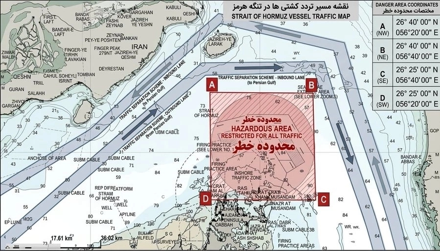

Bộ tư lệnh Trung tâm (CENTCOM), cơ quan đặc trách hoạt động của quân đội Mỹ tại Trung Đông, hôm 11/4 thông báo đã bắt đầu quá trình "tạo điều kiện để rà phá thủy lôi ở eo biển Hormuz", sau khi hai tàu khu trục di chuyển qua khu vực này. "Chiến hạm USS Frank E. Peterson và USS Michael Murphy đi qua eo biển Hormuz, hoạt động ở vịnh Arab là một phần trong nhiệm vụ nhằm đảm bảo tuyến hàng hải này không còn thủy lôi", CENTCOM cho hay, thêm rằng các lực lượng bổ sung, trong đó có cả tàu lặn không người lái, có thể tham gia hoạt động trong những ngày tới. Đô đốc Brad Cooper, chỉ huy CENTCOM, cùng ngày tuyên bố quân đội Mỹ đã bắt đầu quá trình thiết lập tuyến đường thủy mới. "Chúng tôi sẽ sớm chia sẻ tuyến đường an toàn này với ngành hàng hải để khuyến khích lưu thông thương mại tự do", ông nói. Thông tin được công bố sau khi Tổng thống Donald Trump cho hay hải quân Mỹ "đang dọn dẹp" ở eo biển Hormuz, đồng thời tuyên bố toàn bộ tàu rải thủy lôi của Iran đã bị đánh chìm. Trung tá Ebrahim Zolfaghari, phát ngôn viên quân đội Iran, sau đó cho biết Tehran "kiên quyết bác bỏ" thông tin tàu chiến Mỹ đi qua eo biển Hormuz. "Lực lượng vũ trang Iran vẫn nắm quyền quyết định tàu nào được di chuyển qua khu vực", ông Zolfaghari nói. Hải quân Vệ binh Cách mạng Hồi giáo Iran sau đó cũng tuyên bố bất kỳ tàu quân sự nào cố đi qua eo biển Hormuz "sẽ bị xử lý nghiêm khắc", cho rằng hoạt động đi qua eo biển chỉ được "cấp phép đối với tàu dân sự trong những điều kiện cụ thể". Eo biển Hormuz là tuyến vận chuyển dầu mỏ quan trọng, chiếm khoảng 20% nguồn cung dầu toàn cầu. Ngay sau khi Mỹ - Israel phát động chiến dịch tấn công Iran ngày 28/2, Tehran đã triển khai nhiều xuồng cao tốc để rải thủy lôi tại eo biển Hormuz. Các thủy lôi, cùng mối đe dọa từ máy bay không người lái (UAV) và tên lửa, khiến số lượng tàu hàng đi qua tuyến hàng hải này giảm xuống mức rất thấp, đẩy giá năng lượng tăng cao và mang lại cho Iran đòn bẩy lớn nhất trong xung đột. Mở lại tuyến đường này là một trong những chủ đề quan trọng trong thỏa thuận ngừng bắn gần đây giữa các bên, dù số tàu thuyền qua lại vẫn còn hạn chế. Sau khi các bên đạt được lệnh ngừng bắn, Vệ binh Cách mạng Hồi giáo Iran (IRGC) ngày 9/4 công bố lộ trình thay thế cho tàu thuyền để tránh nguy cơ trúng thủy lôi tại eo biển Hormuz. Tuy nhiên, quan chức Mỹ cho rằng tuyến di chuyển này bị hạn chế đáng kể, chủ yếu do Iran rải thủy lôi một cách thiếu hệ thống. ← Quay lại